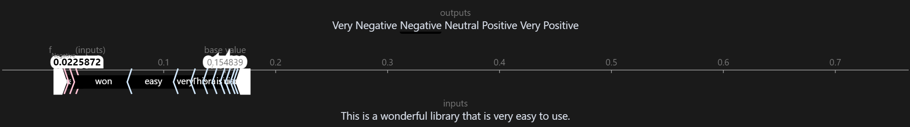

Evaluating SHAP Explanations for Multilingual Sentiment Analysis
A Cross-Linguistic Study on Human Perception and Interpretability
Timur Sharifullin, Francesco Chialli
WU Digital Economy 2025
Project Resources
Access the code, datasets, and detailed results related to this research project.
GitHub Repository
Explore the full source code and project files.
Google Colab Code Demo
Run and interact with the research code.
Movie Dataset (Kaggle)
Access the movie sentiment dataset.
AI Act Dataset (Kaggle)
Download the EU AI Act legal corpus.
Results Table (Google Sheets)
View the comprehensive research results.
Introduction to SHAP Explanations
Interact with the sentiment analysis model's explanations! Click the buttons below to see how SHAP highlights influential words in English, Italian, and Russian examples.
Problem Statement
As multilingual sentiment analysis models are increasingly deployed, the interpretability of their predictions via XAI tools like SHAP becomes crucial for trust and transparency. However, the effectiveness of SHAP explanations—particularly in multilingual and non-expert evaluation contexts— remains underexplored. This research investigates how native speakers of English, Italian, and Russian perceive SHAP explanations for a multilingual sentiment analysis model, focusing on the alignment between SHAP attributions and human reasoning, and the practical challenges in generating and visualizing such explanations.
Research Questions
Overarching Research Question:
- How interpretable and useful are SHAP explanations for native speakers evaluating multilingual sentiment analysis models across different languages and sentiment classes?
Sub-Questions:
- To what extent do SHAP-based explanations align with native speakers’ judgments about which words contribute to sentiment in English, Italian, and Russian?
- What are the main challenges in mapping SHAPley values to human-interpretable explanations in case of text classification model for sentiment analysis?
- How do the limitations of SHAP’s standard visualizations and attribution schemes affect the practical utility of explanations for non-expert users?
Methodology
Explore the different stages of our research methodology by clicking on the icons below.
Initial Data Collection
Two datasets were formulated for the purpose of sentiment analysis task.
- Movie Parallel Subtitles Dataset (Kaggle Link) contains 25 aligned movie subtitle segments in English, Russian, and Italian, extracted from the ParTree corpus (Parallel Treebanks). Initial full scripts text files were filtered by languages. Non-movies (TV Shows) were excluded from the datasets. Large text files were selected with support of LLM tool (Claude Sonnet 4.0, Google Gemini 2.5 Flash), and the resulting phrases were validated by native Russian and Italian speakers to avoid any LLM hallucinations.
- EU AI Act Legal Parallel Dataset (Kaggle Link) contains 25 aligned text fragments from the official European Union AI Act in English and Italian. PDF documents were uploaded into Google Gemini 2.5 (Flash) LLM tool to select the article fragments that could have sentiment controversies. The resulting text fragments were validated by native Italian speaker to avoid any LLM hallucinations.
1. SHAPley Values: Challenges in Human-Interpretable Explanations
RQ: What are the main challenges in mapping SHAPley values to human-interpretable explanations in case of text classification model for sentiment analysis?
Token-Level vs. Word-Level Explanations
SHAP (SHapley Additive exPlanations) values are typically computed at the token level in sentiment analysis models. However, this granularity poses a challenge for interpretability: human users naturally reason about text in terms of words or phrases, not individual tokens. To bridge this gap, our project aggregates token-level SHAP values into word-level explanations. While this approach improves intuitiveness, it is not without limitations.
Example: Combining Tokens into Words
| Explanation Level | Text | SHAP Value |
|---|---|---|
| Token-level | 'Math' | +0.009696 |
| 'ema' | +0.001574 | |
| 'tician' | +0.002578 | |
| 's' | +0.002578 | |
| Word-level | Mathematicians | +0.016426 |
Contextual and Cross-Linguistic Challenges
The interpretability of SHAP explanations further complicates when words carry context-dependent sentiment or when languages handle compound terms differently. For instance:
- In English, "A-bomb" is treated as a single word with a strongly negative sentiment.
- In Italian and Russian, the equivalent phrase ("bomba atomica" or "атомная бомба") is split into multiple words, each contributing differently to the sentiment.
Examples Across Languages:
| Language | Phrase | Word | SHAP Value |
|---|---|---|---|
| English | "A-bomb." | A-bomb | +0.113532 |
| Italian | "bomba atomica." | bomba | +0.004191 |
| atomica. | -0.045284 | ||
| Russian | "атомные бомбы." | атомные | -0.003834 |
| бомбы. | +0.076413 |
Limitations of Automation and Human-Machine Logic
While n-gram explanations offer a more accurate reflection of human reasoning, they cannot be fully automated. This introduces variability in interpretability, as the "correct" grouping of tokens may depend on subjective or contextual judgments. The tension between technical precision (token-level accuracy) and human-friendly explanations (word or phrase-level) remains unresolved, posing a fundamental challenge for explainable AI (XAI) in multilingual settings.
2. SHAP Package: Limitations in Practical Utility
RQ: How do the limitations of SHAP’s standard visualizations and attribution schemes affect the practical utility of explanations for non-expert users?
In the context of project's case, SHAP’s standard visualizations often confuse non-expert users because they display SHAP values (feature contributions to the model’s output) rather than direct sentiment labels. For example:
- In a standard SHAP Force Plot, words with positive SHAP values push the model’s prediction toward a class (e.g., "Negative"), but this can appear counterintuitive. A word like "happy" might show a negative SHAP value in a negative sentiment prediction (because it reduces the model’s confidence in "Negative"), yet users expect "happy" to align with positive sentiment.
- This disconnect creates misleading interpretations, as users conflate SHAP’s technical output (contributions to the prediction) with subjective sentiment associations.
Technical and Usability Challenges
- Visualization Bugs and Inconsistencies
- Package has problems with support. For example, the bug with color mapping on Text Plot was discussed in October 2024 on the official SHAP github page, but is still open and unresolved. It is typical for highly specialized packages.
- While color schemes and version-specific workarounds exist, they require technical expertise, limiting accessibility for non-experts.
- Rigid Design for Diverse Audiences
- SHAP’s predefined plots are either *too complex* for non-experts (e.g., Force Plots with bidirectional arrows) or *too simplistic* for experts seeking granular insights.
- Customization is cumbersome, as the package prioritizes algorithmic accuracy over user-centric design.
- Practical Workarounds
Practitioners would bypass SHAP’s native visualizations, extracting raw SHAP values and plotting them with tools like Matplotlib or Plotly. This approach offers:
- Greater flexibility in tailoring explanations to audience needs.
- Integration with broader reporting workflows (e.g., combining SHAP outputs with traditional EDA plots).
3. Respondents vs SHAP Alignment: Human-Machine Logic Conflict
RQ: To what extent do SHAP-based explanations align with native speakers’ judgments about which words contribute to sentiment in English, Italian, and Russian?
The results of this project highlights the xAI issue of a difference between human and machine logic. The results that we have are quite controversial. On the one hand most of the predictions made by the model agreed with the evaluation of the respondents for both languages, which should prove that the model predictions are generally correct.
However, in a lot of cases the respondents did not agree with the visual explanation based on SHAPley values. Thus, we had a sufficient number of cases where respondents were in agreement with the overall class of sentiment predicted by the model, but were in partial or complete disagreement with how this result was obtained.
Example of Disagreement in Russian:
For this sentence, all respondents rated the sentiment as “Positive”, which matches perfectly with the model's prediction. In the image, the positive words selected by the respondents are highlighted in purple. Respondents gave scores of 1, 2, and 2 to this visual explanation.
Overall statistics:
These plots describe the percentage of aligned responses, where word selection of respondents were in agreement with the explanation given by SHAP.
These plots describe the distribution of respondents’ ratings on correctness of SHAP explanations.
SHAP Explanations ≠ Human Explanations
The findings do not suggest that SHAPley values are fundamentally incorrect, but demonstrate the fundamental difference in logic between human and machine. While the SHAP framework is still useful for statistical analysis, it should not be interpreted as a human-centered explanation, but rather a detailed description. The interpretation of this description could vary drastically and still require an expertise on model architecture to make any conclusion on the quality of the observed model.
Should Models Be Retrained to Match Human Logic? If the model achieves high accuracy, its "black-box" logic may not require adjustment - even if explanations seem counterintuitive. At the same time, in terms of stakeholder trust explanations must resonate with human reasoning. But the model does not and will not work by human logic, therefore in such cases SHAP could be used not for an explanation, but as a tool for justification.
Conclusion
SHAP explanations are statistically useful but interpretively limited for non-expert native speakers. Their utility depends on:
- Audience. Experts can leverage SHAP’s granularity; non-experts need curated summaries.
- Language Specifics. Morphological and syntactic differences (e.g., compounding, negation handling) require adaptive explanation strategies.
- Purpose. SHAP excels in model diagnostics but falls short as a standalone communication tool.
SHAP tools remain valuable for tuning and validation but require careful framing and interpretation.
That's it!
Would appreciate any stars for Github Repo and upvotes for Kaggle datasets!